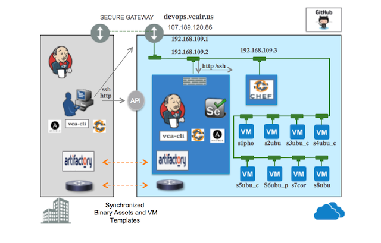

This details the demo runtime environment and major services.

Environment Highlights
The DevOps vApp is an Ubuntu VM that hosts the following Servers
- Jenkins 1.609
- Chef 12.0.7_1
- Artifactory 3.6.0
- Selenium
The Devops server and the VM's generated by the demo are all accessble through the public gateway using ssh and http.
All examples are available on github in repo
vcadevops
Questions? Contact - rdbwebster@gmail.com